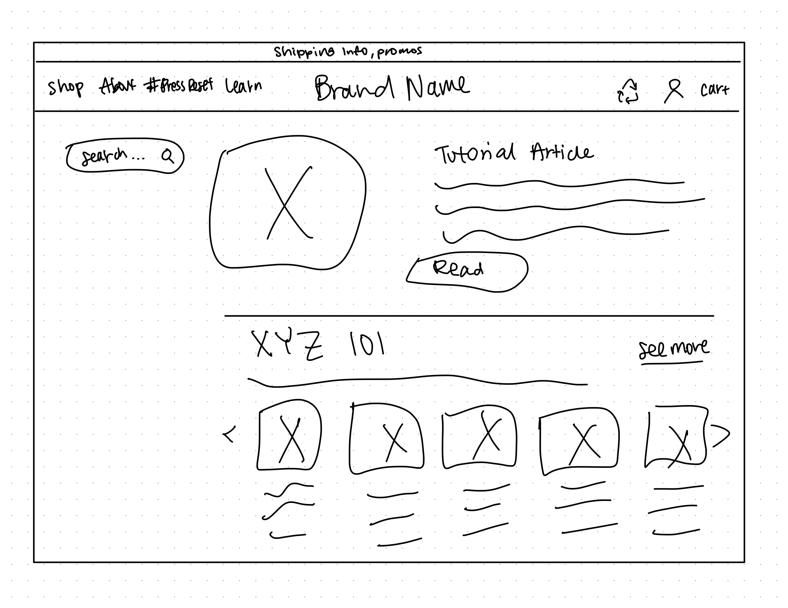

-
Using the favorite website you chose in homework 1, create a wireframe for one page of it using pen/paper, PowerPoint, or any your tool of choice. (use the 'img' tag!) Make sure to let us know what the name of your website is (Use the 'p' tag!)
Website I chose: Krave Beauty 
-
Try to improve the website you've chosen, and create a redesigned wireframe of one page for the same website using the principles of visual hierarchy that you learned from the article.

-
What is the goal of the website? Who is it intended for? How does the design accomplish this? Write 2-3 sentences answering these questions. (Use the 'p' tag again!)
The goal of the website to provide free resources for vistors. It covers the brand mission and values, how to create a skincare routine, why sunscreen is important, and to educate people on sustainability within beauty products. It is intended for Krave's customers and skincare lovers.
-
Write 2-3 sentences about what problems your redesign addressed, and how it solved them.
I addressed the one column gap that it had on the left side by moving the search bar to the very top to not have too much negative space. I also changed the search to I want to learn about, to help customers understand more about the goal of this page, which is to learn from the free resources. I also grouped the four main concepts into four quarters to prevent too much scrolling.
NOTE: Make sure to include the wireframe images in the website and don't just put it in your assets folder!
Your wireframes should look something like this: